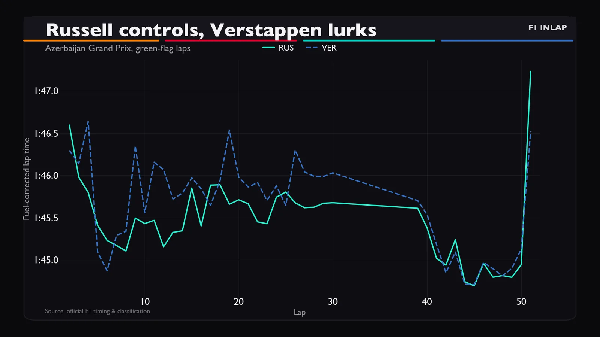
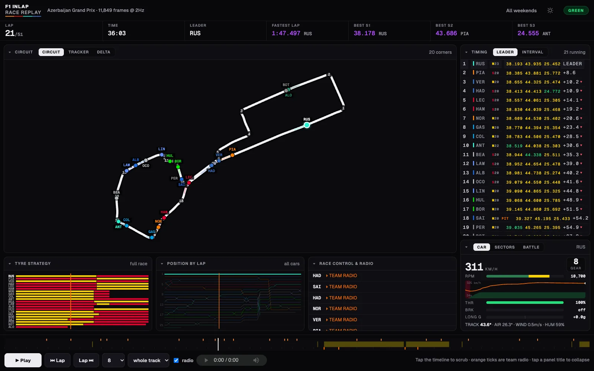
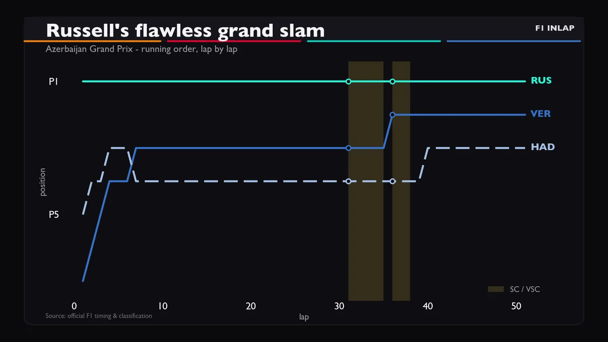
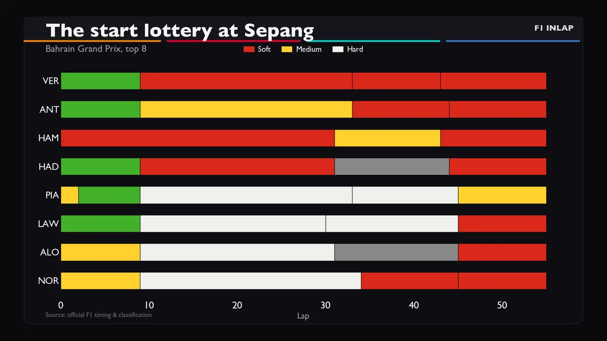
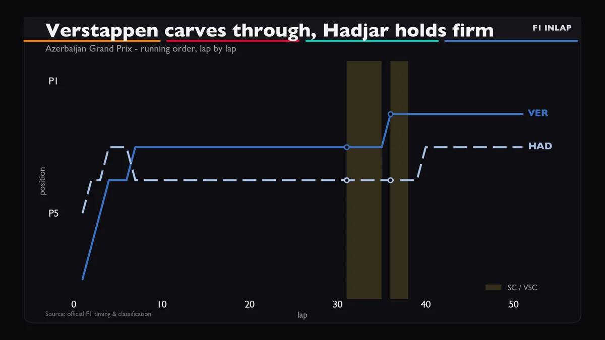
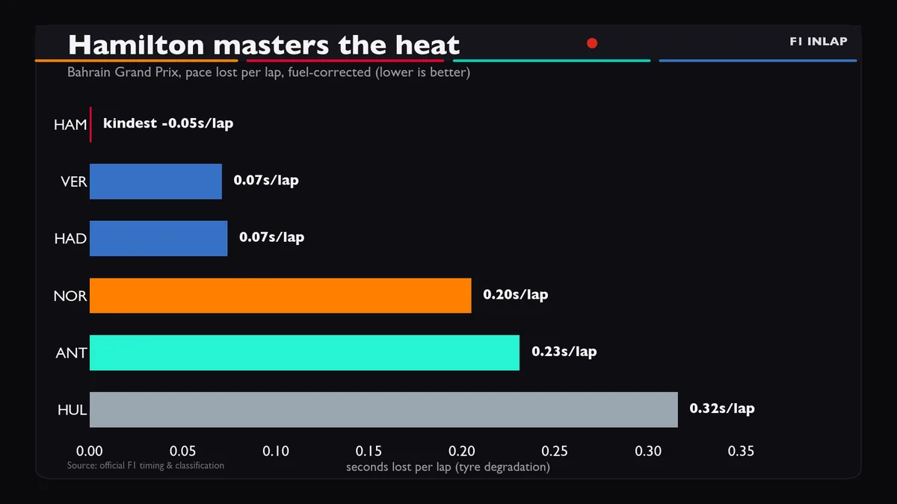

Formula 1, read from the timing data.
Analysis after every practice, qualifying and race. Charts built from the lap data, every claim checked against it.

Round 16, 4 Oct 2026
The Bahrain Grand Prix in Malaysia
The latest weekend, analysed session by session from the timing data.
Every weekend, in the data
Replay a race with its team radio, read a practice session as numbers, or watch the analysis. Pick a round and a session.

- R17Singapore Grand Prix11 Oct
- R16Bahrain Grand Prix in Malaysia4 Oct
- R15Azerbaijan Grand Prix26 Sep
- R14Spanish Grand Prix13 Sep
- R13Italian Grand Prix6 Sep
- R12Dutch Grand Prix23 Aug
- R11Hungarian Grand Prix26 Jul
- R10Belgian Grand Prix19 Jul
- R9British Grand Prix5 Jul
- R8Austrian Grand Prix28 Jun
- R7Barcelona Grand Prix14 Jun
- R6Monaco Grand Prix7 Jun
- R5Canadian Grand Prix24 May
- R4Miami Grand Prix3 May
- R3Japanese Grand Prix29 Mar
- R2Chinese Grand Prix15 Mar
- R1Australian Grand Prix8 Mar
- Video analysis
- Instagram reel
- Session summary
- Race replay
- Radio log
Numbers first, opinions second
Every video starts from the session’s own timing data.
Built from lap data
Pace lines, sector splits, tyre stints and gaps are drawn straight from the timing feed, so the chart on screen is the number being discussed.
Fact-checked before it is voiced
A separate pass checks each script against the data. Wrong positions, gaps or lap numbers are rewritten before anything is recorded.
Out the same day
Each session is produced as soon as its data lands: five videos across a normal race weekend.
No broadcast footage
Nothing is clipped from the television feed. The analysis runs on our own charts and graphics.
What the analysis looks like
Slides from the latest race deep-dive.



